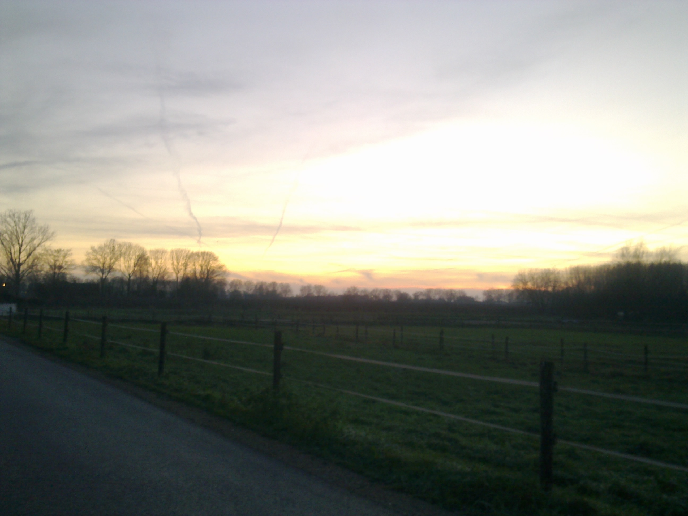
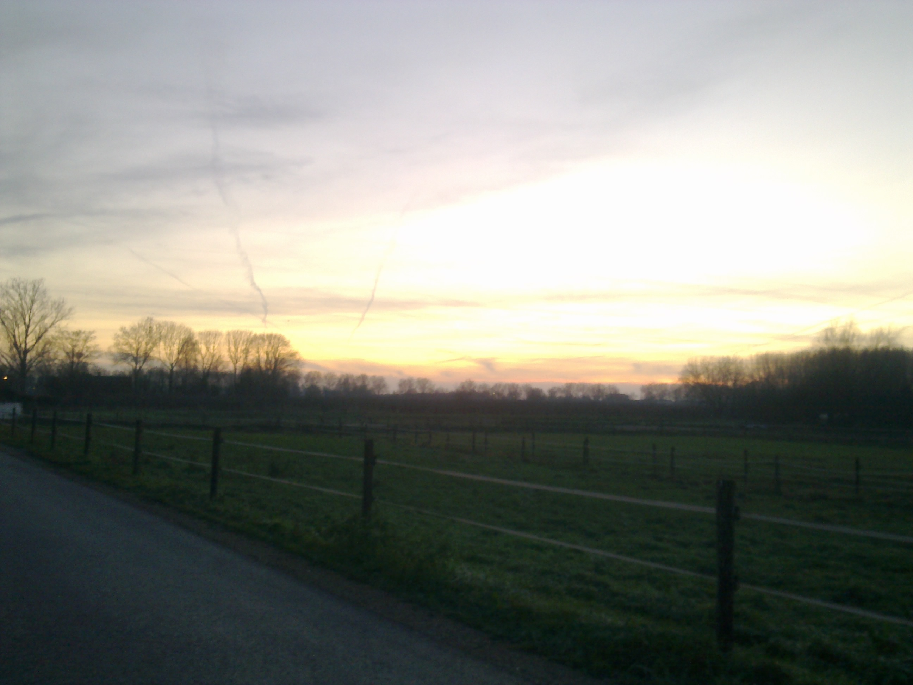
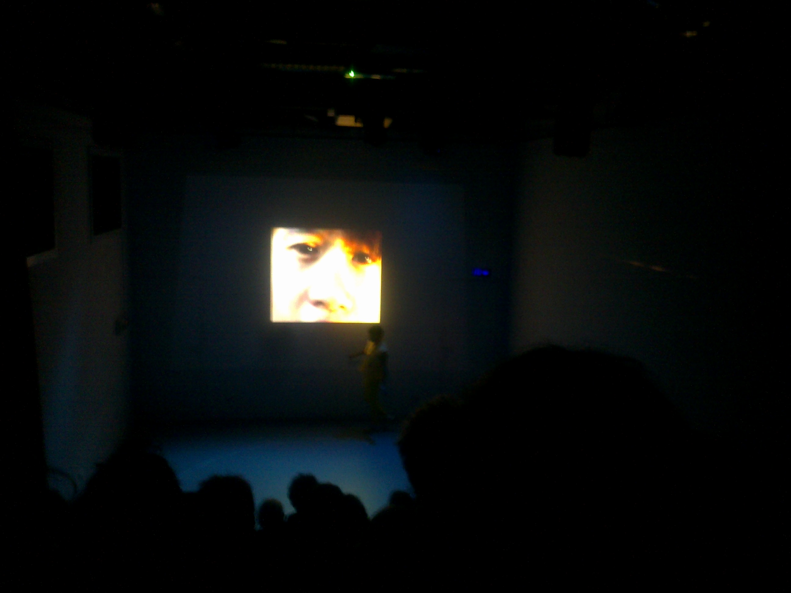
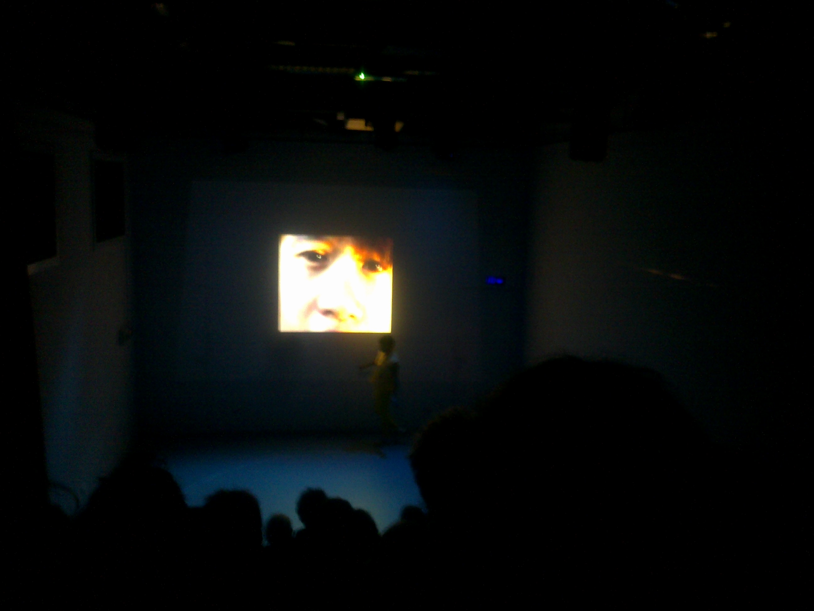

Het is een beetje een gekke tijd voor me, ik ben mezelf een beetje kwijt en ik weet niet meer zo goed waar ik blij van word, wie ik wil zien en waar ik energie uit wil halen en geven. Deze maand zit vol gekkigheden, ik had een show in acu met 100 mensen in de zaal, ik ben nog steeds op stage, het is winter, en er is nog iets groots gebeurd dat ik nog even niet ga noemen.
In elk geval ben ik me nu volledig aan het storten op mijn derde album, en heb ik de andere twee waar ik aan werkte, even opzij gezet. Ik heb nu twee weken kerstvakantie (inmiddels een), en dan wil ik eigenlijk alle composities afhebben. En dat geeft mijn dagen wel houvast en een reden om mijn bed uit te komen. Dat gaat heel goed en het is heel erg fijn om mijn verdriet in liedjes te kunnen stoppen en daar even volledig in op te kunnen gaan. en ik hoor midas zeggen dat hard werken escapisme is en gelijk heeft ie ook. Whatever, Er komt in elk geval mooie hartverscheurende muziek aan.
Gelukkig ben ik afgelopen dagen ook wel mijn hol uit geweest en heb ik eigenlijk elke dag wel leuke fijne mensen gezien, en daar ben ik zeker nu extreem dankbaar voor. Ik heb gisteren weer lekker geklommen en vandaag komt pier langs om iets leuks te bouwen en daar kijk ik erg naar uit.
ik hoop dat jij je ook een beetje staande houdt in deze gekke tijden. Ik ben altijd maar een belletje weg, en hopelijk weten jullie dat allemaal.
Tot snel,,

 

Terwijl ik mijn kastje aan het verven was komt ineens mijn lieftallig huisgenootje heel erg blij binnen en zegt dat die naar een buitenspeelavondje ging. Ik weet niet wat het was maar er sloeg ineens iets om ofzo en ineens voelde ik me best eenzaam en stom en dat ik mijn jonge jaren aan het verspillen was met kastjes bouwen terwijl er eigenlijk ook heel veel leuke dingen en mensen te doen en te ontmoeten zijn buiten mijn kamer en buiten mijn hoofd. En dat was best een beetje stom van mezelf. Want er was ook geen haar op mijn hoofd die ook maar zin had in menselijke interactie. en ook terwijl ik mijn vrienden afgelopen week nog een aantal keer had gezien, en twee dagen stage had bij theater de generator met hele lieve leuke mensen die ik ook wel vrienden zou noemen.
Maar ergens zit er dus toch nog iets in mij dat denkt dat de hele dag met mensen zijn beter is, en minder verspilling van je tijd is. Beide helften van die zinnen zijn onzin, want zolang jij doet waar je zin in hebt is er geen verspillng van je tijd. en alleen kunst maken en dingen bouwen is toch ook wel iets dat ik heel cool vind als anderen dat doen. dus waarom niet bij mezelf? snap je
deze blogpost is echt een beetje onzin, maar ik hoop dat je het punt snapt. ik ben kluizenaar en vaak wil ik alleen zijn maar echt niet altijd en ik vind mensen ook echt heel lief en leuk en aardig maar soms heb ik gewoon een beetje tijd nodig om op te laden voordat ik zin heb om met andere lieve mensen te zijn, maar soms ben ik alsnog eenzaam en weet je dat is oke. Ik hoop dat jullie me zullen accepteren voor wie ik ben, een soms eenzame kluizenaar.
goeiemorgen zeg ik ga snel maar fietsen

Is het gelukt? mooi. Dat is fijn want dat wens ik je wel toe. Ik ben er zelf denk ik voor een groot deel wel achter waarom ik me een beetje gek voel deze dagen.
stage is begonnen, inmiddels twee weken, HEt is echt super super leuk. ik loop stage bij pieter vonk en bij Theater de generator. Twee hele andere en op zichzelf leuke plekken, maar wel allebei twee plekken waar ik me heel erg thuis, blij en dankbaar voel. Bij beide plekken werd ik warm onthaald door hele mooie mensen. Doordat ik hier zo graag en vaak ben, ben ik minder op andere plekken. Zoals natuurlijk op school, hoewel ik dat op zich niet eens zo erg vind, merk ik wel dat ik mijn vrienden heel erg mis. Mijn super mooie dierbare vrienden aan wie ik zo veel te danken heb. En die heb ik nu al die hele twee weken niet gezien. ik ben ook veel en veel minder thuis aan het werk, waardoor ik mijn super mooie dierbare huisgenoten ook nog eens mis. Ik mis met ze praten over hun dag en een theetje drinken en dat ook nog eens tegelijk.
Ik mis thuis zijn en alleen in mijn kamer en muziek maken en schrijven en mijn familie en buiten zijn in plaats van in kunstlicht en jeetje wat veel eigenlijk. Mensen zijn mij vaak als een sociaal mens en ik hou ook van mensen maar ik ben ook heel graag alleen en dat kan ik soms wel gaan missen, een antimensendag heb ik al weken niet gehad.
Het is even schakelen. Laatst kwam ik thuis van een dag stage bij pieter, het was vrijdagavond. Ik ging naar de winkel en heb toen gekookt, en ben toen op de bank gaan zitten met een pot thee en heb toen Tv gekeken en toen niks meer gedaan. Dat voelde zo ongelooflijk onwenning. Dat is niet de persoon die ik wil zijn. Ik wil tot veel te laat opblijven omdat ik ontplof van de inspiratie of ergens veel te laat aankomen en een rondje fietsen buiten en gewoon robin dingen, dit was dat niet. Ik ben er toen gelijk wat over gaan schrijven om te compenseren. Maar jeetje, het voelt soms wel gek. Zo "volwassen" worden. Meer rust ervaren, meer tevredenheid, meer zelfverzekerheid, maar ook minder een zoektocht en dankbaarheid. Het is gek. Deze stage gooit ook gewoon mijn leven om, ik ben denk ik ook gewoon heel erg moe. Twee werkweekenden gehad achter elkaar. maar ZOVEEL MOOIE MENSEN.
Ik heb nu ook wat mensen leren kennen van HKU theater en die zijn ook heel lief en iemand waarvoor ik muziek ga maken voor hun super vette gedichten en een instalatie en ik deed geluid voor een bruiloft met allemaal lieve mensen en de mooiste dag die ik zomaar eens mocht meemaken? jeetje. wat GEBEURD hier allemaal. Het mooie is dat ik mezelf met allemaal nieuwe connecties ook steeds weer opnieuw kan voorstellen en presenteren, en ik durf nu wel iets meer mezelf te zijn. Even iets positiefs is prettig. Ik heb nu ook eindelijk gedurft om mezelf te tatoeren, ik heb een zon en een fiets. en ik vind mijn benen nu een stuk mooier. Volgende tattoo is een huisje. Ook ben ik heel veel gedichjtes aan het schrijven laatste tijd. Die kosten me wat minder moeite dan een muziekstuk. Sommigen zal ik zetten op mijn Kunst pagina
ben ik een dichter, of voel ik gewoon veelschreef ik laatst, het mezelf in twijfel trekken en de emotionaliteit van laatste tijd vatten het wel mooi samen denk ik. Ik denk dat de herfst ook niet helpt. Ik ben er achter gekomen door de hele dag nu binnen te zijn dat ik echt behoefte heb aan daglicht. Fucking wintertijd ook en vroeg donker worden ook. Nieuwe vriendschappen gaan altijd ten koste van een andere. Dat heb ik geleerd, tenminste over mezelf, en dat weet ik, en dat doet soms gewoon een beetje pijn.
Ik weet het even niet meer. Ik voel me extreem blij en moederziel alleen tegelijk. Het zal de herfst wel weer zijn, winterdepressie is een ding mensen.
Ik schrijf maar door en door, er is te veel om op te noemen, maar ik brei er een eind aan. ik vond het fijn, nogmaals, ik hoop dat het goed met je gaat liev mooi mens, let op jezelf. Luister even naar de wind buiten tijdens het tandenpoetsen, en voel de kou even echt. Dat ga ik tenminste doen. Tot over een tijdje.
 
